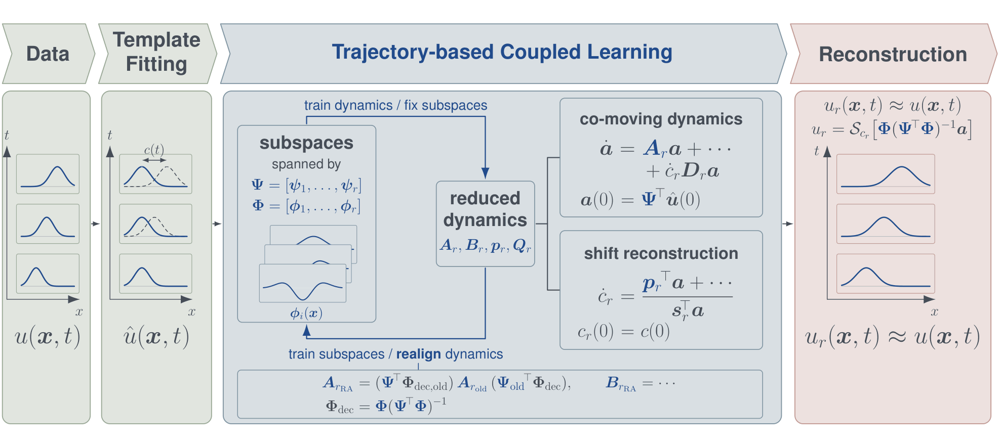

Symmetry-reduced model reduction for shift-equivariant systems

We develop data-driven reduced-order models of partial differential equations with shift equivariance. Such systems typically admit traveling solutions, which require many basis functions in a fixed reference frame. We instead represent the solution in a traveling reference frame, thereby obtaining a more compact representation. Existing methods such as operator inference then fit the reduced model directly from data, without knowledge of the full-order dynamics.
We are now developing a joint optimization that learns the projection subspaces and the symmetry-reduced dynamics together.
-
Symmetry-reduced model reduction of shift-equivariant systems via operator inference
Yu Shuai and Clarence W. Rowley
Advances in Computational MathematicsUnder revision
arXiv:2507.18780, 2025.BibTeX
@misc{shuai2025symmetryreduced, title = {Symmetry-reduced model reduction of shift-equivariant systems via operator inference}, author = {Shuai, Yu and Rowley, Clarence W.}, year = {2025}, eprint = {2507.18780}, archivePrefix = {arXiv}, primaryClass = {math.NA}, url = {https://arxiv.org/abs/2507.18780} }